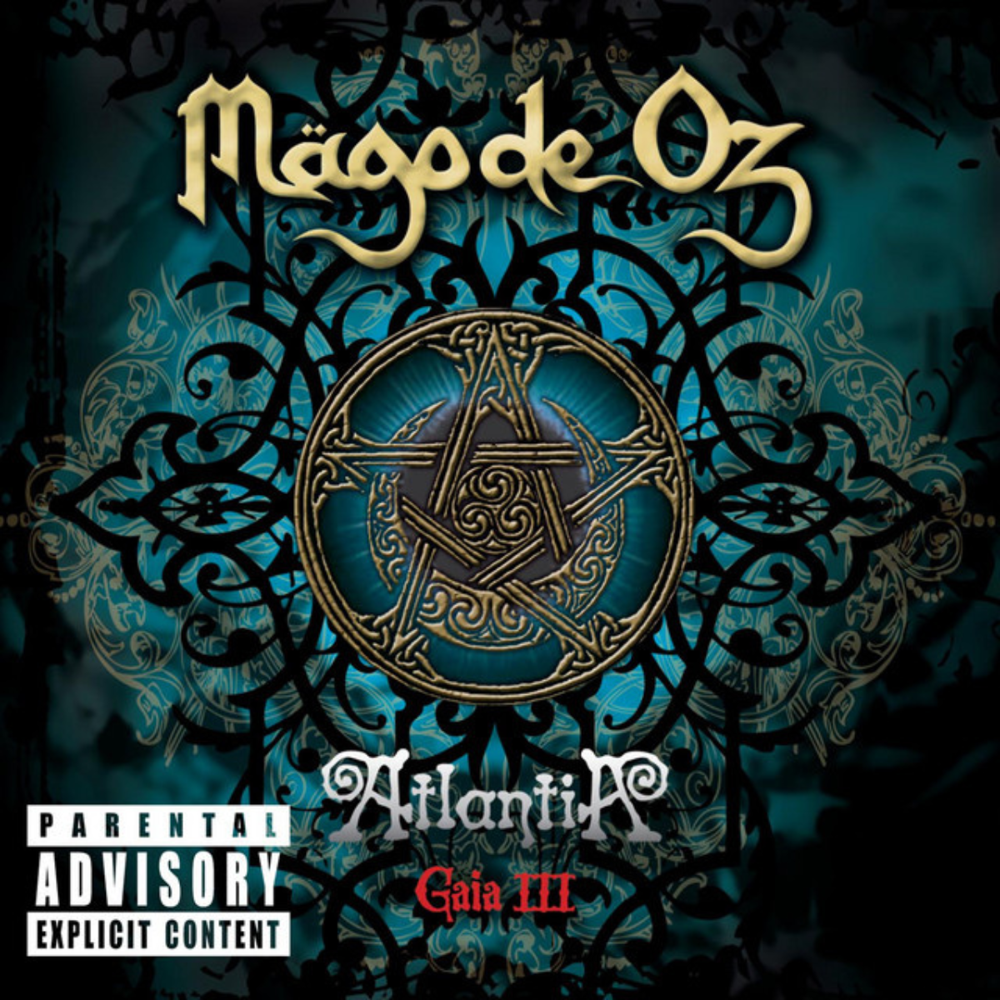

Gaia III: Atlantia es el noveno álbum de estudio de la banda Mägo de Oz, siendo este la última parte de la trilogía Gaia. Fue lanzado el 6 de abril de 2010 en distintos países de Europa y América excepto en México, donde fue lanzado el 19 de abril.123 No se es sabido de una continuación a la línea Gaia de álbumes de Mägo de Oz. Desde un principio se dijo que iba a ser una trilogía; sin embargo, en la novela que acompaña el disco en su edición especial, se deja con un suspenso el final dando a entender que tal vez la historia no haya tenido fin (hablando sobre dos políticos que estaban sentados en su oficina tomando whisky, sin parar de reír, mientras el mundo era destruido). Según un comunicado de Txus Di Fellatio, después de Gaia III: Atlantia la banda se tomará un receso de tiempo sin determinar en su trabajo, no significando esto una disolución del grupo. En cuanto al futuro musical del grupo, el líder se refirió a que tal vez publiquen un álbum más simple e íntimo como La ciudad de los árboles aunque no cierra la posibilidad de continuar con una nueva línea conceptual igual de trabajada y "majestuosa" que la línea Gaia, y advirtió que tarde o temprano el grupo volverá a hacer un trabajo de este estilo.4 Gaia III: Atlantia es considerado el último álbum de la época dorada de Mägo de Oz.
Gaia III: Atlantia
